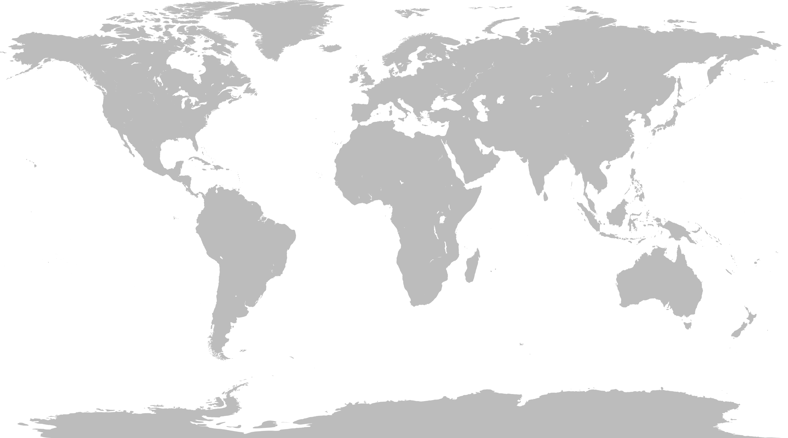

<!DOCTYPE html>
<html>
<head>
  <meta charset="UTF-8" />
  <title>GenericRTSGame – Singleplayer</n>
  <style>
    html, body {
      margin: 0;
      padding: 0;
      width: 100%; height: 100%;
      background: #000;
      overflow: hidden;
    }
    #map-wrapper {
      position: relative;
      width: 100vw;
      height: 100vh;
      aspect-ratio: 768 / 512;
      margin: auto;
      background: #000;
      overflow: hidden;
    }
    #map-bg {
      position: absolute;
      top: 0; left: 0;
      width: 100%; height: 100%;
      object-fit: cover;
    }
    #sp-container {
      position: absolute;
      top: 0; left: 0;
      width: 100%; height: 100%;
    }
    #back-btn {
      position: absolute;
      top: 16px; left: 16px;
      z-index: 20;
      padding: 8px 16px;
      background: rgba(0,0,0,0.6);
      color: #fff;
      border: none;
      border-radius: 4px;
      cursor: pointer;
      font-family: sans-serif;
      font-size: 14px;
    }
    #back-btn:hover { background: rgba(255,255,255,0.1); }
    #hud {
      position: absolute;
      top: 16px; right: 16px;
      z-index: 20;
      padding: 8px 12px;
      background: rgba(0,0,0,0.6);
      color: #fff;
      border-radius: 4px;
      font-family: sans-serif;
      font-size: 14px;
    }
  </style>
</head>
<body>

  <button id="back-btn">← Back to Menu</button>

  <div id="map-wrapper">
    
    <div id="sp-container"></div>
    <div id="hud">Resources: <span id="gold-count">0</span></div>
  </div>

  <script src="https://cdn.jsdelivr.net/npm/phaser@3/dist/phaser.min.js"></script>
  <script src="singleplayer.js"></script>
  <script>
    document.getElementById('back-btn')
      .addEventListener('click', () => window.location.href = 'index.html');
  </script>
</body>
</html>

// ===== singleplayer.js =====
console.log("singleplayer.js loaded — GenericRTSGame with HUD & zoom");

const TILE_SIZE = 64;
const MAP_KEY   = 'default-map';    // for JSON if used

const config = {
  type: Phaser.AUTO,
  scale: {
    parent: 'sp-container',
    mode: Phaser.Scale.FIT,
    autoCenter: Phaser.Scale.CENTER_BOTH,
    width: 768,
    height: 512
  },
  transparent: true,
  scene: [ SPScene ]
};

class SPScene extends Phaser.Scene {
  constructor() {
    super('SPScene');
    this.grid = [];
    this.resourceCount = 0;
  }

  preload() {
    // load JSON if initial owner data needed
    this.load.json('mapData', `assets/maps/${MAP_KEY}.json`);
  }

  create() {
    // optional JSON data
    let map = this.cache.json.get('mapData');
    if (!map) {
      map = { rows: 8, cols: 12, tiles: Array(8).fill().map(() => Array(12).fill(0)) };
    }
    const rows = map.rows, cols = map.cols;

    // camera bounds & zoom limits
    this.cameras.main.setBounds(0, 0, cols * TILE_SIZE, rows * TILE_SIZE);
    this.cameras.main.setZoom(1);
    this.minZoom = 0.5;
    this.maxZoom = 2;

    // overlay transparent interactive tiles
    for (let y = 0; y < rows; y++) {
      this.grid[y] = [];
      for (let x = 0; x < cols; x++) {
        const rect = this.add.rectangle(
          x * TILE_SIZE,
          y * TILE_SIZE,
          TILE_SIZE,
          TILE_SIZE,
          0xffffff,
          0
        )
        .setOrigin(0)
        .setInteractive({ useHandCursor: true });

        rect.on('pointerdown', () => {
          // toggle green overlay
          rect.fillAlpha = rect.fillAlpha ? 0 : 0.3;
          rect.fillColor = 0x22aa22;
        });

        this.grid[y][x] = { rect, owner: map.tiles[y][x] };
      }
    }

    // resource generation event every second
    this.time.addEvent({
      delay: 1000,
      loop: true,
      callback: () => {
        let claimed = 0;
        for (let row of this.grid) {
          for (let cell of row) {
            if (cell.rect.fillAlpha > 0) claimed++;
          }
        }
        this.resourceCount += claimed;
        document.getElementById('gold-count').innerText = this.resourceCount;
      }
    });

    // zoom with mouse wheel
    this.input.on('wheel', (pointer, gameObjects, deltaX, deltaY) => {
      const cam = this.cameras.main;
      cam.setZoom(Phaser.Math.Clamp(cam.zoom - deltaY * 0.001, this.minZoom, this.maxZoom));
    });
  }
}

new Phaser.Game(config);
